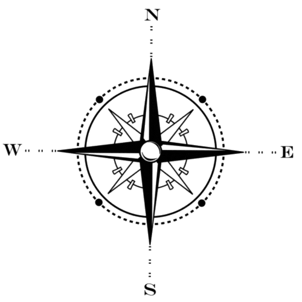

Le manga le plus vendu !
One Piece est un manga créé par Eiichiro Oda en 1997, qui suit les aventures de Monkey D. Luffy et son équipage de pirates à la recherche du One Piece. Avec plus de 480 millions d'exemplaires vendus, One Piece est devenu le manga le plus vendu de tous les temps. Il est une référence incontournable pour les fans de manga.
Les forces s'équilibrent
Dans One Piece, l'équilibre des forces repose sur quatre groupes de personnages puissants : les Yonko, les Shichibukai, les Amiraux et le gouvernement mondial. Chaque groupe cherche à étendre son influence pour obtenir un avantage stratégique, créant un contexte complexe et passionnant pour les fans de la série.
Plus de 1000 épisodes
La série anime est l'une des plus longues de l'histoire avec plus de 1000 épisodes publiés. Elle suit les aventures de Monkey D. Luffy et de son équipage de pirates à la recherche du trésor ultime, le One Piece. La série anime est devenue une référence incontournable grâce à ses nombreux personnages mémorables et ses moments épiques.
Carte de l'univers One Piece
Les personnages les plus important de One Piece
One Piece Explorer: Plongez dans l'univers du manga avec des visualisations interactives ! Faites défiler la page vers le bas pour voir nos visualisations.
Découvrez les chiffres clés de l'univers One Piece à travers nos trois graphiques simples mais informatifs. Plongez dans les ventes de manga, les sorties annuelles de l'animé et les différentes force existantes dans le monde d'One piece avec nos graphiques interactifs. Suivez l'évolution de votre série préférée et explorez les données fascinantes de cet anime/manga culte.
Partez à l'aventure avec l'équipage de Luffy grâce à notre carte interactive de l'univers One Piece. Suivez leurs périples à travers les différentes îles et découvrez les endroits emblématiques de l'histoire de ce manga/anime légendaire. Explorez les lieux et revivez les moments marquants de l'histoire de One Piece avec notre carte interactive. Cette carte a été créée grâce à l'aide d'étudiants de l'HEIG-VD, dont Neib Ouakel et Traversini Sébastien.
Explorez les primes des personnages de One Piece grâce à notre graphique interactif. Plongez dans l'univers de One Piece pour découvrir ses personnages les plus redoutables et recherchés, et explorez les figures les plus intrigantes de son histoire.